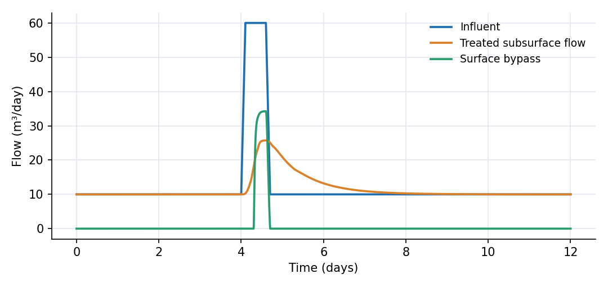
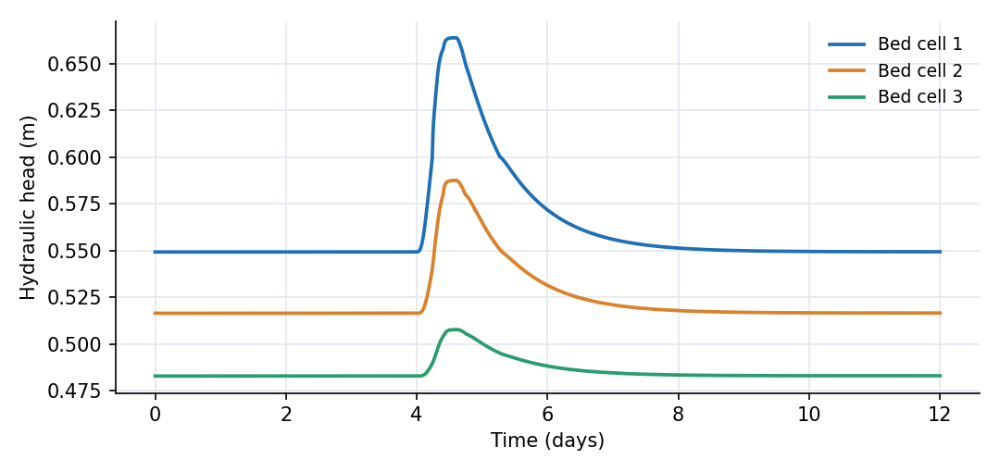
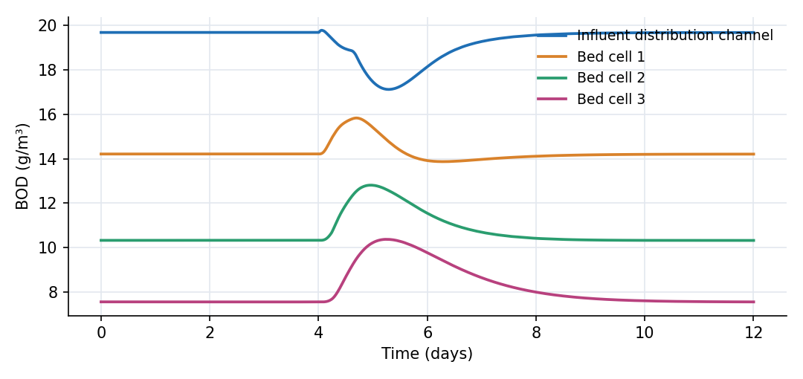

What this model represents
A horizontal subsurface-flow constructed wetland moves water through a porous gravel bed below the surface. Emergent vegetation grows in the bed, but the water level normally remains below the gravel surface. The porous medium spreads the flow, provides surface area for microbial treatment and gives the water several days of contact time without a permanent open-water surface.
This example represents a small treatment bed receiving a continuous flow of 10 m³/day. The bed is 20 m long, 7.5 m wide and 0.6 m thick, with a 0.4 drainable porosity. Its overall length-to-width ratio is 2.67:1. A short design surge tests its hydraulic capacity. Water that cannot enter the bed raises the inlet distribution channel and can leave through a capped surface bypass.
How it works
The three Aggregate_storage_layer_confined cells each have plan area A = 50 m², thickness b = 0.6 m and porosity n = 0.4. Below the top of the layer, water depth is
d = S/(A n)
where S is stored water volume. If the layer fills, additional storage raises the head through the confined storativity of 0.05. The hydraulic head in each cell is H = z_b + d, where z_b is its bottom elevation.
Horizontal flow between adjacent cells follows the expression in aggregate2aggregate_H_Link_b:
Q = (H_s - H_e) (K_s + K_e) (b_s + b_e) w / (4 L)
where K is saturated hydraulic conductivity, b is saturated thickness, w is interface width and L is the centre-to-centre distance. With clean gravelly sand K = 500 m/day, w = 7.5 m and L = 6.67 m. The 0.02 m drop in bed elevation per cell supplies a small background slope, while the stored-water gradient adjusts to carry the imposed flow.
Water enters the first cell from the distribution channel through channel_to_aggregate_link_Kv:
Q = (H_s - H_e) K_v A_i / L_v
The interface area A_i is the smaller of the channel water-surface area and the first cell's 50 m² plan area. The interface conductivity K_v is 1 m/day and the vertical path L_v is 0.3 m.
The outlet link uses Darcy flow from the last cell to a large receiving-water reservoir:
Q = (H_s - H_e) K_s b_s w / L
The surface bypass begins when the inlet head exceeds the 0.8 m crest. Its uncapped rating is Q_w = 15,000(H - 0.8)^1.5 m³/day and its smoothed capacity limit is
Q = Q_w Q_max / (Q_w^n + Q_max^n)^(1/n)
with Q_max = 40 m³/day and n = 6.
BOD enters at 20 g/m³ and is removed everywhere by the first-order reaction
dC/dt = -k C
with k = 0.35 1/day. The gravel cells are completely mixed reactors, so longitudinal dispersion within each 10 m cell is implicit.
What to look for in the results
At the 10 m³/day base flow, the hydraulic loading is 0.0667 m/day. The three bed cells hold 32.2 m³ of pore water, giving a nominal operating residence time of 3.22 days. Their steady heads are 0.549, 0.517 and 0.483 m, and the treated-flow link carries 10.0 m³/day. The downstream reservoir stage changes by only 0.00015 m during the 12-day run, so it acts as an effectively constant receiving-water boundary.
The surge raises the inlet water depth from 0.0093 m to 0.218 m. Its head reaches 0.818 m, 0.018 m above the bypass crest. The bed temporarily carries 25.7 m³/day, while the bypass peaks at 34.2 m³/day and remains above 0.01 m³/day for 0.40 day. Of 150.02 m³ entering over the full run, 139.09 m³ passes through the bed and 10.91 m³ bypasses it. The change in upstream and bed storage is 0.0148 m³, and the integrated water-balance residual is 0.00058 m³, or 0.00039% of inflow.
Before the surge, BOD falls from 20 g/m³ in the imposed inflow to 19.68 g/m³ in the distribution channel, then to 14.21, 10.33 and 7.56 g/m³ through the three cells. This is a 62% concentration reduction across the treatment train at base flow. The short hydraulic pulse raises the final-cell concentration to 10.38 g/m³ at day 5.25, after the flow peak has passed. Across the full simulation, 3,000.4 g of BOD enters, 1,154.1 g leaves in treated flow, 206.9 g leaves in bypass flow and 1,639.4 g is removed by the first-order reaction. The remaining 0.12 g is the increase in stored BOD mass.
Assumptions and limitations
- The model is a conceptual polishing unit, not a site design. Its 0.6 m media depth, 2.67:1 length-to-width ratio and 500 m/day hydraulic conductivity are within preliminary ranges in the U.S. EPA subsurface-flow wetland design manual, but the values are not calibrated to a particular installation.
- The hydraulic conductivity represents clean coarse gravel. Clogging, root growth and preferential paths can lower the field conductivity and shorten effective residence time.
- Each gravel cell is completely mixed. The three-cell cascade approximates distributed plug flow but does not resolve local velocity variations.
- BOD removal is a single first-order process at a fixed 20 °C. It combines microbial oxidation, filtration and settling into one coefficient and does not track dissolved oxygen, solids accumulation or temperature dependence.
- Vegetation is represented by the treatment-rate assumption. Plant growth, seasonal senescence, evapotranspiration and nutrient uptake are not modelled explicitly.
- The bypass limit represents a downstream pipe capacity. A real design also requires freeboard, erosion protection and a checked emergency overflow.
Model diagram
Hover a block or link to see its name and type. Arrows show the positive flow direction.
Components
Click a component to see every property set in the model file, with units and meaning.
Blocks 5
Storage compartments: each holds water (and dissolved or particulate mass) and has a state that evolves in time.
Inlet_DistributionTrapezoidal Channel Segment · open_channelA 6.67 m long, 7.5 m wide distribution channel at the upstream edge of the bed. It receives a continuous 10 m³/day flow and a 0.5-day surge to 60 m³/day, both at 20 g/m³ BOD.
Trapezoidal Channel Segment: Trapezoidal Channel Segment
| Property | Value | Unit | Meaning |
|---|---|---|---|
| BOD: Concentration | 19.678 | g/m3 | Computed as mass/(Storage+0.00001) |
| BOD: Constant Inflow concentration | 20 | g/m3 | |
| Base Width | 7.5 | m | The width of the bottom (flat) portion of the trapezoidal channel cross-section. |
| Side Slope | 1 | The horizontal to vertical ratio of the sloped sides (e.g., 2 means 2 horizontal to 1 vertical). | |
| Manning's Roughness Coefficient | 0.04 | Roughness coefficient used in Manning's equation to estimate flow resistance. | |
| Bottom Elevation | 0.6 | m | Elevation of the channel bottom relative to the model’s vertical datum. |
| Segment length | 6.6667 | m | |
| Initial Water Depth | 0.0093 | m | Depth of water in the channel segment. If depth is initially unknown, it is estimated based on storage. |
| Inflow time series | inflow.csv | m^3/day | |
| Inflow multiplier | 1 | Scales the inflow time series (for example an uncertain lateral inflow estimate). 1 uses the series as given. | |
| Obstacle height | 0 | m | The water depth below which the flow ceases |
| Area of agriculural land | 0 | m2 | |
| Area of non-agriculural activity | 0 | m2 |
Bed_1Aggregate_storage_layer_confined · svb_subsurfaceThree 6.67 m by 7.5 m gravel cells, each 0.6 m thick with porosity 0.4 and saturated hydraulic conductivity 500 m/day. Together they form a 20 m long, 7.5 m wide subsurface bed.
Aggregate_storage_layer_confined: Aggregate (gravel) layer of finite thickness. Head = bottom_elevation + depth; transmissive thickness = min(depth, thickness).
| Property | Value | Unit | Meaning |
|---|---|---|---|
| BOD: Concentration | 14.213 | g/m3 | Computed as mass/(Storage+0.00001) |
| Base Area | 50 | m2 | |
| Bottom Elevation | 0 | m | |
| Porosity | 0.4 | ||
| Initial Water Depth | 0.5493 | m | Initial depth must not exceed the thickness. Above the top of the layer the head rises with confined_storativity instead of porosity. |
| Saturated Hydraulc Conductivity | 500 | m/day | |
| Thickness of the aggregate layer | 0.6 | m | |
| Storage per unit area per unit head rise once the layer is full (dimensionless) | 0.05 |
Bed_2Aggregate_storage_layer_confined · svb_subsurfaceThree 6.67 m by 7.5 m gravel cells, each 0.6 m thick with porosity 0.4 and saturated hydraulic conductivity 500 m/day. Together they form a 20 m long, 7.5 m wide subsurface bed.
Aggregate_storage_layer_confined: Aggregate (gravel) layer of finite thickness. Head = bottom_elevation + depth; transmissive thickness = min(depth, thickness).
| Property | Value | Unit | Meaning |
|---|---|---|---|
| BOD: Concentration | 10.332 | g/m3 | Computed as mass/(Storage+0.00001) |
| Base Area | 50 | m2 | |
| Bottom Elevation | -0.02 | m | |
| Porosity | 0.4 | ||
| Initial Water Depth | 0.5366 | m | Initial depth must not exceed the thickness. Above the top of the layer the head rises with confined_storativity instead of porosity. |
| Saturated Hydraulc Conductivity | 500 | m/day | |
| Thickness of the aggregate layer | 0.6 | m | |
| Storage per unit area per unit head rise once the layer is full (dimensionless) | 0.05 |
Bed_3Aggregate_storage_layer_confined · svb_subsurfaceThree 6.67 m by 7.5 m gravel cells, each 0.6 m thick with porosity 0.4 and saturated hydraulic conductivity 500 m/day. Together they form a 20 m long, 7.5 m wide subsurface bed.
Aggregate_storage_layer_confined: Aggregate (gravel) layer of finite thickness. Head = bottom_elevation + depth; transmissive thickness = min(depth, thickness).
| Property | Value | Unit | Meaning |
|---|---|---|---|
| BOD: Concentration | 7.567 | g/m3 | Computed as mass/(Storage+0.00001) |
| Base Area | 50 | m2 | |
| Bottom Elevation | -0.04 | m | |
| Porosity | 0.4 | ||
| Initial Water Depth | 0.5230 | m | Initial depth must not exceed the thickness. Above the top of the layer the head rises with confined_storativity instead of porosity. |
| Saturated Hydraulc Conductivity | 500 | m/day | |
| Thickness of the aggregate layer | 0.6 | m | |
| Storage per unit area per unit head rise once the layer is full (dimensionless) | 0.05 |
Receiving_WaterTrapezoidal Channel Segment · open_channelA 1 km² receiving-water reservoir initialized at elevation 0.466 m. Its large surface area keeps the downstream stage effectively constant while accepting treated flow and bypass flow.
Trapezoidal Channel Segment: Trapezoidal Channel Segment
| Property | Value | Unit | Meaning |
|---|---|---|---|
| BOD: Concentration | 0 | g/m3 | Computed as mass/(Storage+0.00001) |
| Base Width | 1000 | m | The width of the bottom (flat) portion of the trapezoidal channel cross-section. |
| Side Slope | 1 | The horizontal to vertical ratio of the sloped sides (e.g., 2 means 2 horizontal to 1 vertical). | |
| Manning's Roughness Coefficient | 0.04 | Roughness coefficient used in Manning's equation to estimate flow resistance. | |
| Bottom Elevation | 0 | m | Elevation of the channel bottom relative to the model’s vertical datum. |
| Segment length | 1000 | m | |
| Initial Water Depth | 0.466 | m | Depth of water in the channel segment. If depth is initially unknown, it is estimated based on storage. |
| Inflow multiplier | 1 | Scales the inflow time series (for example an uncertain lateral inflow estimate). 1 uses the series as given. | |
| Obstacle height | 0 | m | The water depth below which the flow ceases |
| Area of agriculural land | 0 | m2 | |
| Area of non-agriculural activity | 0 | m2 |
Links 5
Connections that move water (and the mass it carries) between blocks.
Infiltrationchannel_to_aggregate_link_Kv · svb_subsurfaceVertical Darcy exchange from the distribution channel into the first gravel cell through a 0.3 m path with interface conductivity 1 m/day.
channel_to_aggregate_link_Kv: Exchange between a channel segment and the aggregate beneath it; conductance K_v*area/length, independent of the aggregate's horizontal K_sat
| Property | Value | Unit | Meaning |
|---|---|---|---|
| Interface (vertical) hydraulic conductivity | 1 | m/day | |
| Length | 0.3 | m | This is the length from the center of the channel water body to the centroid of the aggregate layer |
Bed_1_to_2aggregate2aggregate_H_Link_b · svb_subsurfaceHorizontal Darcy flow from the first to the second gravel cell across a 5 m wide interface.
aggregate2aggregate_H_Link_b: Horizontal Darcy flow between two confined-thickness aggregate layers
| Property | Value | Unit | Meaning |
|---|---|---|---|
| Interface Width | 7.5 | m | |
| Length | 6.6667 | m |
Bed_2_to_3aggregate2aggregate_H_Link_b · svb_subsurfaceHorizontal Darcy flow from the second to the third gravel cell across a 5 m wide interface.
aggregate2aggregate_H_Link_b: Horizontal Darcy flow between two confined-thickness aggregate layers
| Property | Value | Unit | Meaning |
|---|---|---|---|
| Interface Width | 7.5 | m | |
| Length | 6.6667 | m |
Treated_Outflowaggregate_to_collector_link · svb_subsurfaceDarcy drainage from the last gravel cell to the outlet collector over a 5 m path.
aggregate_to_collector_link: Flow from the aggregate toward a collector; length = distance from the cell centroid to the collector, width = width of the collector face
| Property | Value | Unit | Meaning |
|---|---|---|---|
| Interface Width | 7.5 | m | |
| Length | 3.3333 | m |
Surface_Bypassweir_capped · svb_subsurfaceA capacity-limited overflow from the distribution channel. Its crest is 0.2 m above the channel floor and its discharge approaches 40 m³/day smoothly.
weir_capped: Weir (or riser) feeding a pipe of limited capacity. Below the cap it behaves as the power-law weir; above it the discharge approaches Q_max smoothly (continuous derivative).
| Property | Value | Unit | Meaning |
|---|---|---|---|
| Crest Elevation | 0.8 | m | |
| Coefficient alpha in Q=alpha*(h-z_0)^beta (SI-day units) | 15000 | ||
| Exponent beta in Q=alpha*(h-z_0)^beta | 1.5 | ||
| Maximum discharge (capacity of the downstream pipe) | 40 | m3/day | |
| Sharpness of the cap (large n approaches min(Qw, Q_max)) | 6 |
Constituents 1
Substances or particles carried by the water.
BODConstituentBiochemical oxygen demand represented as a dissolved constituent in g/m³.
Constituent: Chemical constituent
| Property | Value | Unit | Meaning |
|---|---|---|---|
| Concentration | 0 | g/m3 | Computed as mass/(Storage+0.00001) |
| Constant Inflow concentration | 0 | g/m3 | |
| Diffusion Coefficient | 0 | m2/day | |
| Dispersivity | 0 | m | |
| Stoichiometric Constant | 0 |
Reaction parameters 1
Named coefficients used in reaction rate expressions.
k_BODReactionParameterFirst-order BOD removal coefficient of 0.35 1/day at the fixed 20 °C teaching condition.
ReactionParameter: Reaction Parameter
| Property | Value | Unit | Meaning |
|---|---|---|---|
| Value | 0.35 | ||
| Arrhenius temperature correction factor | 1 | ||
| Reference Temperature | 20 |
Reactions 1
Transformations among constituents, each with a stoichiometry and a rate expression.
BOD_RemovalReactionFirst-order reaction that removes dissolved BOD in every water-holding block.
Reaction: Chemical reaction
(k_BOD*BOD)| Constituent | Stoichiometric coefficient |
|---|---|
| BOD | -1 |
Input files
inflow.csv | Influent flow in m³/day versus time in day. The base flow is 10 m³/day; a 60 m³/day design surge lasts from day 4.1 to day 4.6, with 0.1-day ramps. |
Simulation settings
| Start time | 0 |
| End time | 12 |
| Initial time step | 0.001 |
| Write interval (steps) | 5 |
Results
Produced by running the downloaded model unchanged.


